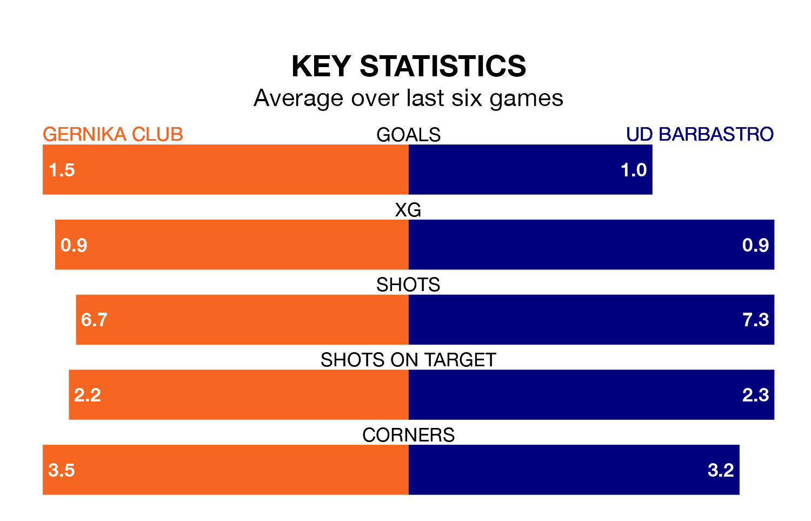

Gernika Club host UD Barbastro on Sunday at the Estadio Urbieta in the Segunda División RFEF Group 2.
In their last league match, on April 28, Gernika Club lost to Athletic Club B 3-1 away, with their goal scored by Mikel Arzalluz Errasti.
Barbastro won, 3-1 at home against Real Sociedad III, with Eduardo Mingotes Pelegrín, Israel García Moreno and Jaime Reques Vegas on the scoresheet.
With 27 goals in 33 games so far this season, Barbastro are scoring at below the league average rate with 0.8 goals per game. But they are conceding fewer than average too, letting in 28 goals at a rate of 0.8 per game.
Gernika Club, meanwhile, are average scorers, with 1.1 goals per game. They have conceded 1.4 goals per game.
The hosts are 11th in the table after 33 games, of which they have won 11 and drawn 10, earning 43 points.
The away side are three places ahead of Gernika Club in eighth, with 10 wins and 14 draws putting them on 44 points.
Gernika Club are in mixed form in the Segunda División RFEF Group 2, with three wins and three losses from their last six games.
With two wins and two draws over that period, Barbastro's form is slightly worse – they have taken eight points from 18, compared to the home team's nine.
Updated: 12:00 (UTC), 02/05/24